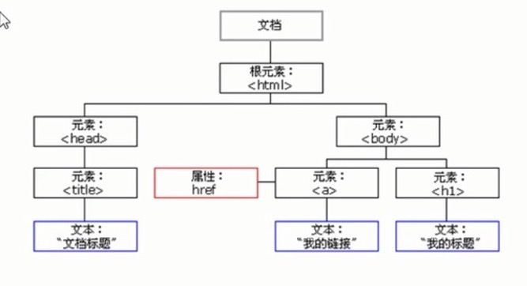

WebAPIs
1. Web APIs简介
1.1 JS的组成
- ECMAScript JS语法----JS基础
- DOM 页面文档对象模型----Web APIs
- BOM 浏览器对象模型----Web APIs
1.2 API和Web API
API（Application Programming Interface，应用程序编程接口），API是给程序员提供的一种工具，以便能更轻松的实现想要完成的功能。
Web API是浏览器提供的一台操作浏览器功能和页面元素的API（BOM和DOM），主要针对浏览器做交互效果，一般都有输入输出，很多都是方法
2. DOM
- DOM简介
- 获取元素
- 事件基础
- 操作元素
- 节点操作
2.1 DOM简介
DOM（Document Object Model，文档对象模型），是W3C组织推荐的处理可扩展标记语言的标准编程接口
DOM树

- 文档：一个页面就是一个文档，DOM中用document表示
- 元素：页面中的所有标签都是元素，DOM中用element表示
- 节点：网页中的所有内容都是节点（标签，属性，文本，注释等），DOM中用node表示
W3C定义了一系列的DOM接口，通过这些接口可以改变网页的内容，结构，和样式
- 对于JS，为了能使JS操作HTML，JS就有了一套自己的编程接口
- 对于HTML，DOM使HTML形成了以可DOM树，包含文档，元素，节点
- DOM中把以上内容都看作对象，我们获取过来的DOM元素是一个对象，所以称为文档对象模型
2.2 获取元素
页面中获取元素主要通过：①根据ID获取；②根据标签名获取；③根据H5新增的方法获取；④特殊元素获取；
- 根据ID获取：var obj = document.getElementById('要获取元素的ID');console.dir(obj);打印返回的元素对象，更好的查看里面的属性和方法
- 根据标签名获取：var obj = document.getElementsByTagName('标签名');返回的是带有指定标签名的对象的集合，以伪数组的方式存储，
所以我们想要操作里面的元素就需要遍历，得到的元素是动态的
- 根据H5新增的方法获取：var obj = document.getElementsByClassName('类名');根据类名返回元素对象集合
var obj = document.querySelector('选择器');根据指定选择器返回第一个元素对象，里面的选择器要加符号 如.nav #box
var obj = document.querySelectorAll('选择器');根据指定选择器返回所有元素对象的集合
- 特殊元素获取：var obj = document.body;返回body元素的对象；var obj = document.documentElement;返回HTML元素对象
2.3 事件基础
事件由三部分组成：事件源，事件类型，事件处理程序
- 事件源：事件被触发的对象
- 事件类型：如何触发，什么事件
- 事件处理程序：通过函数赋值形式
执行事件的步骤：①获取事件源；②注册事件（绑定事件）；③添加事件处理程序（采取函数赋值形式）
常见的鼠标事件：
- onclick 鼠标点击左键触发
- onmouseover 鼠标经过触发
- onmouseout 鼠标离开触发
- onfocus 获得鼠标焦点触发
- onblur 失去鼠标焦点触发
- onmousemove 鼠标移动触发
- onmouseup 鼠标弹起触发
- onmousedown 鼠标按下触发
2.4 操作元素
2.4.1 改变元素内容
innerText和innerHTML都可以改变元素内容，但他们有一定区别
- element.innerText;去除（不识别）HTML标签，同时空格和换行也会去掉
- element.innerHTML;包括（识别）HTML标签，可以获取元素里面的内容
2.4.2 常用元素的属性操作：获取元素后直接赋值
常用元素：①innerText,innerHTML改变元素内容；②src，href路径；③id，alt，title；
PS:表单里面的值文字内容是通过value来获取的，禁用表单或按钮是通过disabled属性disabled=true；
案例1：显示或隐藏密码
//1.获取元素
var eye = document.getElementById('eye');
var pwd = document.getElementById('password');
//2.注册事件 处理程序
var flag = 0;
eye.onclick = function({
if (flag == 0) {
pwd.type = 'text';
eye.src = 'img/open.png'
flag = 1;
} else {
pwd.type = 'password';
eye.src = 'img/close.png'
flag = 0;
}
});
2.4.3 样式属性操作
我们可以通过JS修改元素的大小，颜色，位置等样式
- element.style 行内样式操作
- element.className 类名样式操作
注意：
- JS里面的样式采用的是驼峰命名法，如fontSize，backgroundColor；
- JS修改样式产生的是行内样式，css权重比较高
- 如果样式修改比较多，可以采取操作类名的方式更改元素样式
- class因为是保留字，因此使用className来操作元素类名属性
- className会直接更改元素类名，会覆盖原先的类名，所以如果是需要修改其中一些样式，要把原来的类名也写上
2.4.5 排他思想
如果由同一组元素，我们想要某一个元素实现某种样式，需要用到循环的排他思想
- 所有的元素全部清除样式/设置同种样式（干掉其他人）
- 给当前元素设置样式（留下我自己）
- 注意顺序不能颠倒，先干掉其他人再设置自己
案例：全选和取消全选
1.全选和取消全选的做法：让下面所有复选框的checked属性（选中状态）跟随全选按钮
//获取元素
var btnAll = doucument.getElementById('btnAll');//全选按钮
var btns = document.getElementById('tb').getElementsByTagName('input');//下面复选框的所有按钮
//注册事件 处理程序
btnAll.onclick = function ({
for (var i = 0; i < btns.length; i++) {
btns[i].checked = this.checked;//this.checked可以得到当前全选按钮的选中状态，true就是选中，false就是未选中
}
});
2.下面的复选框需要全部选中，上面的全选才能选中做法：给下面的所有复选框都绑定事件，每次点击都要循环检查所有复选框是否全部选中
//给所有复选框循环绑定事件
for(var i = 0; i < btns.length; i++) {
btns[i].onclick = function ({
flag = 0;//flag控制全选按钮是否选中
//循环判断所有复选框是否全部选中
for(var i = 0; i < btns.length; i++) {
if (!btns[i].checked) {//如果有一个复选框未选中
flag = false;//那么全选按钮就未选中
break;//剩下的无需循环，提高执行效率
}
}
btnAll.checked = flag;
});
}
2.4.6 自定义属性的操作
自定义属性的目的是为了保存并使用数据，有些数据可以保存到页面中而不用保存到数据库中
H5规定自定义属性以“data-”开头作为属性名并赋值或者使用setAttribute设置
获取属性值：①element.属性；②element.getAttribute('属性');
区别：①element.属性；获取内置属性值（元素本身自带的属性）
②element.getAttribute('属性');主要获得自定义的属性（标准）
设置属性值：①element.属性 = 'value'；②element.setAttribute('属性', 'value');主要设置自定义属性
注意：element.setAttribute('class', 'value');class特殊，这里面写的就是class，而不是className
移除属性：①element.className = ''；移除所有属性②element.removeAttribute('属性');
2.5 节点操作
获取元素的方式：①利用DOM提供的方法获取元素；如getElementById(),querySelector()等②利用节点的层级关系获取元素；
节点：
- nodeType 节点类型：元素节点nodeType = 1；属性节点nodeType = 2；文本节点nodeType = 3；文本节点包括文字，空格，换行
在实例开发中节点操作主要操作的是元素节点
- nodeName 节点名称
- nodeValue 节点值
2.5.1 父级节点：node.parentNode
- parentNode属性返回某节点的父节点，注意是最近的一个父节点
- 如果指定的节点没有父节点则返回null
2.5.2 子节点：
- parentNode.childNodes和parentNode.children
①parentNode.childNodes
- parentNode.childNodes返回包含指定节点的子节点的集合，即时更新
- 返回值里包含所有子节点，包括元素节点，文本节点即空格换行等也包括
- 如果只想获得里面的元素节点需要专门处理，不提倡使用childNodes
②parentNode.children获取所有的子元素节点，实际开发中常用
- parentNode.firstChild/parentNode.firstChild 和 parentNode.firstElementChild/parentNode.firstElementChild
- parentNode.firstChild/parentNode.firstChild 返回父节点的第一个/最后一个子节点，找不到返回null，包含所有节点空格换行
- parentNode.firstElementChild/parentNode.firstElementChild 返回父节点的第一个/最后一个子元素节点，找不到返回null，有兼容性问题
2.5.3 兄弟节点
- node.nextSibling/node.previousSibling 和 node.nextElementSibling/node.previousElementSibling
- node.nextSibling/node.previousSibling 返回节点的下一个/上一个兄弟节点，找不到返回null，包含所有节点空格换行
- node.nextElementSibling/node.previousElementSibling 返回父节点的下一个/上一个兄弟元素节点，找不到返回null，有兼容性问题
如何解决兼容性问题？
封装一个兼容性函数，例
function getNextElementSibling(element) {
val el = element;
while (el = el.nextSibling) {
if (el.nodeType === 1) {
return el;
}
}
return null;
}
2.5.4 节点操作
- 创建节点：document.createElement('tagName');动态创建；
- 添加节点：node.appendChild(child);将一个节点添加到指定父节点的子节点列表末尾,注意要先创建节点再添加；
node.insertBefore(child, 指定元素);将一个节点添加到指定父节点的子节点列表开头；
- 复制节点：node.cloneNode();括号里为空或false为浅拷贝，只复制标签不复制内容，true为深拷贝，复制标签复制内容；
- 删除节点：parentNode.removeNode(childNode);
三种动态创建元素的区别
- document.write();直接将内容写入页面的内容流，但是文档流执行完毕会导致页面重绘
- document.innerHTML;将内容写入某个dom节点，不会导致页面重绘，创建多个元素效率更高（不要拼接字符串，采取数组方式拼接），结构稍微复杂
- document.createElement();创建多个元素效率稍低，但结构清晰
2.6 DOM重点核心
DOM（Document Object Model，文档对象模型），是W3C组织推荐的处理可扩展标记语言的标准编程接口
DOM树
W3C定义了一系列的DOM接口，通过这些接口可以改变网页的内容，结构，和样式
- 对于JS，为了能使JS操作HTML，JS就有了一套自己的编程接口
- 对于HTML，DOM使HTML形成了以可DOM树，包含文档，元素，节点
- DOM中把以上内容都看作对象，我们获取过来的DOM元素是一个对象，所以称为文档对象模型
关于DOM操作，我们主要针对DOM元素进行操作，主要有：创建，增，删，改，查，属性操作，事件操作
2.6.1 创建
- document.write();
- node.innerHTML直接赋值
- document.createElement();
2.6.2 增
- node.appendChild(child);在后面添加
- node.insertBefore(child,'指定元素');
2.6.3 删
- node.removeChild(child);
2.6.4 改
主要修改dom的元素属性，dom元素的内容，属性，表单的值
- 修改元素属性：src，href，title等
- 修改普通元素内容：innerHTML，innerText
- 修改表单元素：value，type，disabled
- 修改元素样式：style，className
2.6.5 查
主要获取查询dom的元素
- DOM提供的API方法：getElementById(),getElementsByTagName()；古老方法，不推荐
- H5提供的新方法：querySelector(),querySelectorAll();提倡
- 修改表单元素：value，type，disabled
- 利用节点操作获取元素：父（parentNode），子（children），兄（previousElementSibling、nextElementSibling）提倡
2.6.6 属性操作
主要针对自定义属性
- setAttribute:设置dom的属性值/li>
- getAttribute:获得dom的属性值/li>
- removeAttribute:移除属性/li>
2.6.7 事件操作
给元素注册事件，采取事件源（获取事件）-- 事件类型（注册事件）-- 事件处理程序（处理函数）
常见事件：
- onclick 鼠标点击左键触发
- onmouseover 鼠标经过触发
- onmouseout 鼠标离开触发
- onfocus 获得鼠标焦点触发
- onblur 失去鼠标焦点触发
- onmousemove 鼠标移动触发
- onmouseup 鼠标弹起触发
- onmousedown 鼠标按下触发